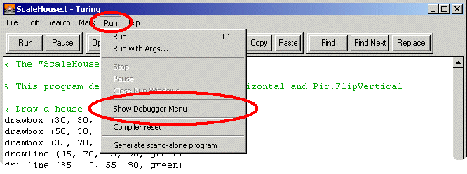
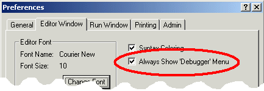
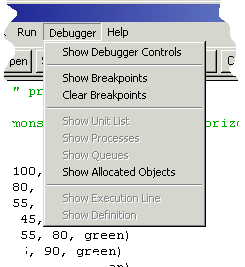
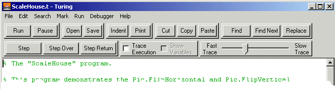
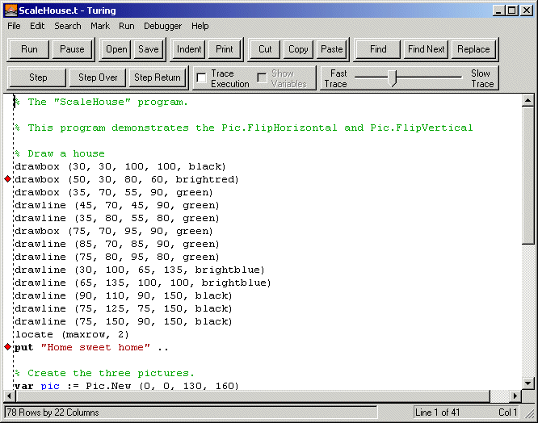
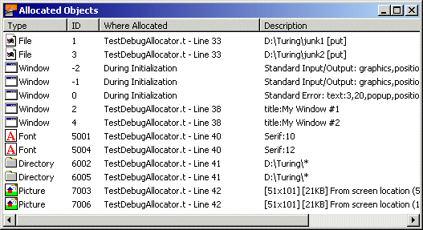

Turing supports a number of tools to enable users to debug their programs andexamine program execution. Some of the available tools are:- a line at a time. - with a set pause between lines of execution - to pause execution at specified points in the program. - of a program including files, fonts,pictures, etc. As of May 2002, the Turing 4.1 software does not contain the following feature:- View variables. This feature will be implemented as time and developer resources permit.##Displaying The Debugger Menu In order to use any of the debugger commands, you need to have the Debuggermenu showing in the Editor window. By default, the Debugger menu is hiddenin order to simplify the Turing environment for the majority of students notusing the debugger.
There are two ways that the Debugger menu can be displayed. You can selectthe Show Debugger Menu command in the Run menu.

Show Debugger Menu command in the Run menu
If you are consistenly using the debugger, then you should change the Preferences so that the Debugger menu is always displayed. This canbe done by bringing up the Editor Window pane of the Preferencesdialog box and setting the Always Show 'Debugger' Menu check box.

Always Show 'Debugger' Menu in the Editor Window Pane

Show Debugger Menu command in the Run menu
The Debugger menu gives you access to all the debugging features in Turing 4.0.The following menu options are available:- Show Debugger ControlsThis command causes each Editor window to display a second row of controls at the top of the window (called the Debugger controls) that allow the user to step through a program and trace execution of the program. When the Debugger controls are visible, then thismenu item changes to Hide Debugger Controls.

Window with Debugger Controls Visible

Window with Breakpoint Visible

Allocated Objects Window
The rest of this document will use some terms that must be understood properly.- Running - A Turing program is running when statements are beingcontinuously executed without human intervention. However, runningmay be stalled while the program is waiting for keyboard input, executinga delay statement, etc. - Paused - A Turing program is paused when execution is temporarily halted. No input is accepted by the program whileit is paused. A program can become paused in a variety of ways including:- The user pressing the Pause button. - The user pressing a Step, Step Over or Step Return button. - Execution reaching a breakpoint. - Execution reaching the break statement in a program. When a Turing program is paused, the line in the source code on which the Turing program was about to execute is highlighted.In each case, the program can resume running by clicking the Resume button. The program can also temporarily resume runningby the user pressing the Step, Step Over or Step Return button. Once the statement or statements are finishedrunning, the program is paused again. - Executing - A program is executing when it is either Runningor Paused. - Halted - A Turing program is halted when it can no longer executing. It cannot be resumed and must be started from the beginningin order to run it again. A program can be halted by:- The user pressing the Stop button. - A run-time error. - The user closing a Run window.
Stepping a program consists of executing a Turing program a line at a time.After each step command, execution pauses, highlighting the next line to be executed. To step a program, the program must not be running. The Debuggercontrols in the Editor window must be visible. To step the program, the user clicks one of the three buttons in the Debugger Controls:- Step - If the program is halted, this executes the very firstline of code and then pauses. If the program is paused, it executesthe highlighted line of code and then pauses. If it line of code tobe executed is a subprogram call, then it enters the subprogram and pauses at the first line of code in the subprogram. If it is at theend of the subprogram, then it leaves the subprogram and pauses atthe subprogram call. This command is sometimes called Step Into. - Step Over - This executes a single line of code. However, ifthe program is paused at a subprogram call, then the entire subprogramis executed and execution is paused at the next line after the subprogramcall. - Step Return - This resumes execution until the execution returnsfrom a subprogram. The next line after the subprogram call. Note thatif this command is given in the main program, then execution will continueuntil the program terminates.
Tracing a program is simply executing a program slowly with each line of codein the program being highlighted as it is executed. Tracing allows usersto see how control constructs operate. Unlike stepping, with tracing, executioncontinues until it is paused or halted in some other fashion.
To start a program tracing, the Debugger Controls must be visible. The userthen clicks the Trace Execution check box. When the program is next running, each time a statement is executed, the line in the source code will behighlighted. The speed at which the tracing occurs is controlled by the Trace Speed slider found in the Debugger Controls. When the slider ison the left, there is essentially no delay between execution of statements. (Note that execution will still be much slower than not tracing due to the timetaken to highlight each executing statement.) When the slider is on the right,each statement will wait for about 5 seconds after executing before the nextstatement is executed.##Setting Breakpoints Often only a particular section of code is of interest to the user. Breakpoints provide a mechanism for pausing a program only when execution reaches a specified statement. To set breakpoints, they need to be displayed in the Editor window. This is done with the Show Breakpoints command in the Debugger menu. Once breakpoints are visible, they can be set (and removed) by simply clicking the mouse in the breakpoint area. When the mouseis over the breakpoint area, it turns into a diamond. When the breakpoint isset, a red diamond appears in the breakpoint area. To remove the breakpoint,simply click the red diamond and the breakpoint disappears.
Window with Two Breakpoints Set
When execution reaches a line with a breakpoint on it, the program pausesand the line is highlighted. The program can then be resumed or stepped asdesired. Note that it is possible to set a breakpoint on a line that is notexecuted. If you place a breakpoint on a blank line, it is quite likely thatexecution will not stop. Likewise, in lines broken over multiple lines, itis best to put the breakpoint on the last line in the statement.
To clear all the breakpoints, select Clear Breakpoints from the Debugger menu.##Viewing Open Files/Pictures/Fonts, etc. A common error in Turing programs is to neglect to close open files (using the Close statement) or free pictures or fonts (using the Pic.Freeor Font.Free procedures). The Allocated Objects window displaysall allocated resources until they are freed. This window is displayed byselecting the Show Allocated Objects command from the Debuggermenu. The command can be given even after a program has halted. It is auseful command to use when am open, Pic.New or Font.New has failedbecause of too many open files, pictures or fonts.
The window will also display just how much memory each picture takes up.
Allocated Objects Window
Clicking on the line containing the allocated object will highlight the line inthe code where the object was allocated. The headings on each of the columnscan be clicked allowing the objects to be sorted either by their ID, or bywhere in the program they were allocated.